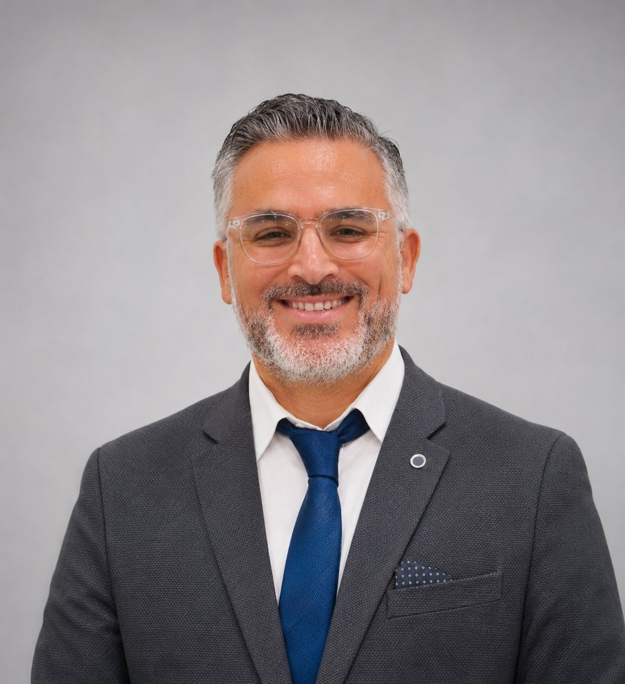
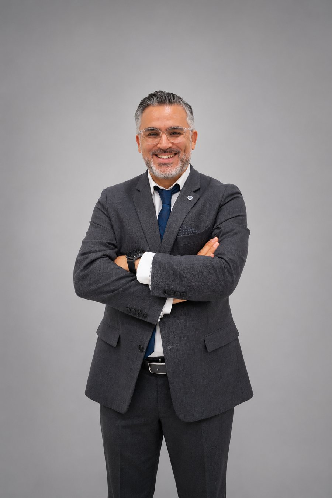
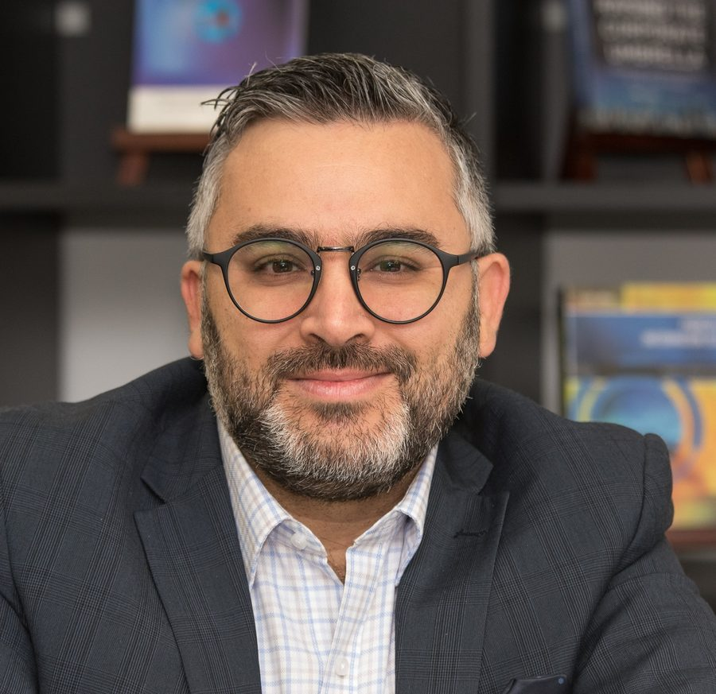
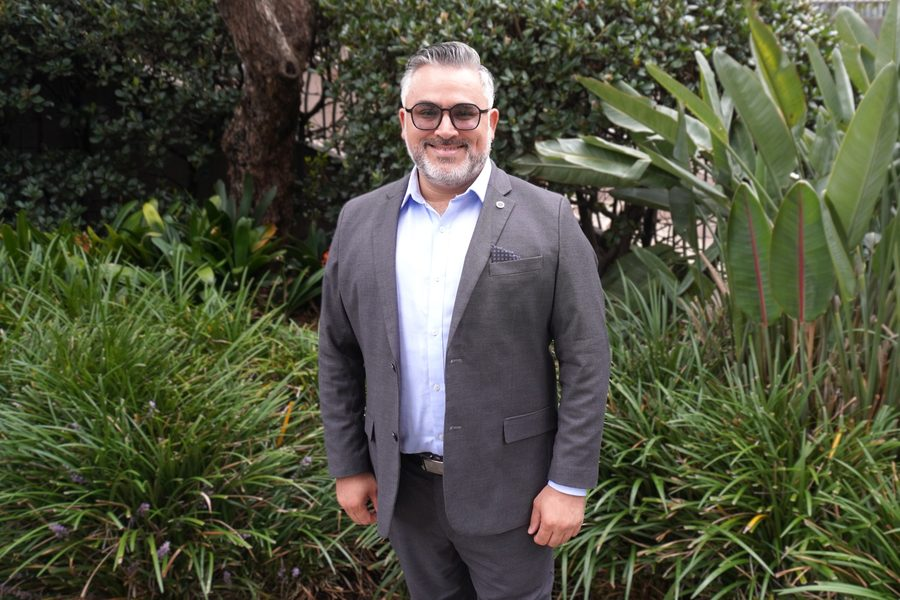

Dr Mahmoud Elkhodr
Information for journalists and editors: name, title, preferred attribution, biographies and photographs, available to copy or download.
Name, title and contact
- Name
- Dr Mahmoud Elkhodr (surname spelt as one word: Elkhodr)
- Title
- Senior Lecturer, School of Engineering and Technology
- Institution
- CQUniversity Australia, Sydney campus
- Arabic
- الأستاذ في الأمن السيبراني الدكتور محمود الخضر
جامعة سنترال كوينسلاند، أستراليا - Expertise
- Cybersecurity, the Internet of Things, digital privacy, large-scale technology outages, and generative AI in education
- Media enquiries
- Loading...
Phone: (02) 9324 5085
Alternative: Loading...
Preferred attribution
The wording below can be used in articles, captions and on-screen graphics. The first version suits cybersecurity and technology stories, and the second suits stories about AI in education.
Dr Mahmoud Elkhodr, cybersecurity researcher and Senior Lecturer, CQUniversity Australia
Dr Mahmoud Elkhodr, Senior Lecturer, CQUniversity Australia, and architect of the SAGE framework for generative AI in education
Dr Mahmoud Elkhodr, CQUniversity Australia
Short biographies
Two versions are provided, led by the subject of the story. Both are in the third person and may be used or shortened as needed.
Dr Mahmoud Elkhodr is a cybersecurity researcher and Senior Lecturer in the School of Engineering and Technology at CQUniversity Australia. His research addresses privacy and security in the Internet of Things, digital infrastructure and AI-enabled systems, and his analysis of the COVIDSafe app was cited by Australia’s Chief Scientist. He provides expert commentary on cyber incidents, privacy and large-scale technology outages through The Conversation, ABC News and international media, and was named in the 2026 Stanford University–Elsevier World’s Top 2% Scientists list. He holds a PhD from Western Sydney University, serves as Nominations Chairman and Education Secretary of the IEEE NSW Section, and is the architect of SAGE, a framework for the responsible use of generative AI in education.
Dr Mahmoud Elkhodr is a Senior Lecturer in the School of Engineering and Technology at CQUniversity Australia and the architect of SAGE (Structured AI-Guided Education), an open program for the responsible use of generative AI in higher education, developed with Professor Ergun Gide. SAGE trains students to critically evaluate, refine and defend AI-assisted work, and three SAGE resources were listed in 2026 in the national Generative AI Knowledge Hub of the Tertiary Education Quality and Standards Agency (TEQSA). He is the author of more than 100 publications, the editor of a volume on generative AI in education, and a regular commentator on AI in higher education. His research also spans cybersecurity and the Internet of Things.
Areas of expert comment
Dr Elkhodr is available to comment on cyber incidents and data breaches, large-scale technology outages and shared digital infrastructure, privacy and connected devices in the home, the security of blockchain and digital assets, and generative AI in education, including assessment and academic integrity.
Photographs for download

Headshot, current Preferred
JPG, 1199 × 1312 pixels, 0.3 MB
Download full size
Portrait, full length
JPG, 1024 × 1536 pixels, 0.2 MB
Download full size
Headshot, close-up
JPG, 1697 × 1646 pixels, 0.6 MB
Download full size
Portrait, standing
JPG, 3000 × 2000 pixels, 1.0 MB
Download full size


Download all photographs (ZIP, 2.0 MB)
The previews are cropped for display. Each download is the full, uncropped frame. Photographs may be used to accompany coverage of Dr Elkhodr or his work. Please credit as: Supplied. Where a single image is needed, please use the photograph marked Preferred.